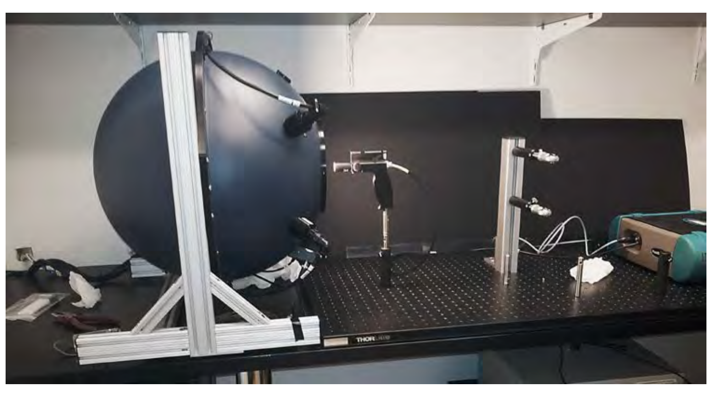

1. Introduction#
Continuous advancements in Unmanned Aerial Vehicle (UAV) technology have broadened its applications in agriculture. These innovations play a crucial role in fostering sustainable solutions and influencing policies and decisions in agriculture. However, the regulatory framework for UAV flights and the development of standardized protocols for precise data capture are continuously evolving. It is imperative to uphold accurate data quality for synergizing multiyear data and other spectral sensors (satellites, drones, field and lab sensors). To maintain high standards, some essential steps were proposed.
2. Pre planning#
2.1. Flight planning#
To carry successful drone surveys, a strategic flight planning is required using a standard flight planning software. Coordinate with the project representative to establish suitable flight parameters, including spatial resolution, date, and additional ancillary measurements.
Ensure the survey area is not within classfied airspace.
List the equipment required for the survey.
Select clearly identifiable ground control point (GCP) locations within the survey area, essential for referencing UAV products.
Ensure that the flight lines are positioned clear of any electric lines or poles that could potentially interfere with signal transmission.
2.2. Weather forecasting#
Verify the weather forecast before initiating the survey. Increasing availability atmosphere data from multiple satellites enables to predict accurate weather prediction for drone campaigns.
Accessing weather information from ECMWF forecasts and Meteosat imagery allows the user to view up to two synchronised loops of the products.
If possible, obtain local/in-situ weather conditions (cloud cover, wind etc.) from the site person. Although many of of UAV flights can withstand 35-50 km/hr winds, flying over 20km/hr will create vibrations thus image quality is effected.
2.3. Site and risk assessment and permissions#
The pilot should identify the site using given coordinates in Google earth Maps or ArcGIS.
Identify geographical features (big trees, bird conservation parks, tall building, electric polls/wires) around the survey area which might affect the data (electromagnetic interference) and flight planning.
Identify possible hazards within the survey area.
The restrictions (permanent and temporary) over the site should be checked.
To ensure lawful and ethical operations, the site permission should be obtained from the project representative/ site manager.
2.4. Flight survey time#
Record the site conditions in the logbook before initiating the drone flight.
Check the GPS/GNSS quality, ensuring a minimum of 5 satellites are available.
It is recommneded to conduct survey (applicable to spectral cameras only as it relies on natural illumination condictions) wihtin +/- two hours of solar noon to reduce artifacts from shadows and sun angles.
Place the GCP and calibration targets in pre-defined locations. The calibration targets should be evaluted with a ground spectroradiometer in order to ensure clealiness and consistancy between the measurements.
Ensure sensors lens is clean if not clean with a lens tissue.
Turn ON instruments, especially the spectral camera, 15 minutes before collecting actual measurements.
Ensure that a clean calibration target should be used for the calibration.
It is advisable to record the calibration target before after the survey. If the survey area is big, additional measurements are required.
Record essential parameters in metadata sheet (Table 1) and logbook.
2.5. Ancillary measurements to support UAV acquisitions.#
Calculating accurate surface reflectance values are essential in various applications and to synergies with other data. To support this, additional measurements can be conducted.
Field spectroradiometer
Simultaneously with the drone flight, ground spectral measurements can be acquired using a spectroradiometer to align with drone spectral data.
Downwelling solar radiation can be captured with a spectroradiometer, utilizing a sensor fiber attached to a cosine receptor and positioned upward with a tripod.
Sun photometer for measuring aerosol optical thickness.
3. Data management#
After the drone flight, cross checking is performed to ensure detailed metadata is recorded, and data is stored in an appropriately. Effective data management is crucial for subsequent analysis. The required metadata information is presented in Table 1.
Visual evaluation of images is necessary to identify undesirable aspects such as blurry images (RGB), illumination variations, and naming issues.
4. Data processing piepleines#
Data processing of UAV data involves several steps to extract meaningful information from the raw data collected by sensors. The processing workflow is explained in below workflow.

The radiometric response of optical sensors/ remote sensing imagery play critical role in obtaining quantitative spectral infromation. Typically, the data from the spectral sensors can be delivered as digital numbers, radiance, and reflectance.
Digital numbers(DN) The amount of reflected light energy measured by the sensor recorded in the form of a binary integers which is not considered as qunatitative value thus not scientifc value. The range of binary integers depend on the radiometric resolution of the sensor. For example A sensor with 8 bits (rediometric resolution) records the data from 0 to 255, while 16 bits sensor records values from 0 to 65536. Radiometric resolution indciates the sensor sensitivity to detect minor energy differences. High resolution sensors has higher sensitivity.
Table 1. The metadata template for UAV derived geospatial data
import pandas as pd
meta_data = pd.read_excel('data/Meta_data.xlsx')
display(meta_data)
| Categories | Details | |
|---|---|---|
| 0 | General meta information | • Name |
| 1 | NaN | • Data collection date |
| 2 | NaN | • Location |
| 3 | NaN | • Surveyor name |
| 4 | NaN | • Data link |
| 5 | NaN | • Brief summary from the field logbook |
| 6 | NaN | • Survey Begin Time |
| 7 | NaN | • Survey End time |
| 8 | NaN | • Platform |
| 9 | NaN | • Sensor |
| 10 | NaN | • Sensor scanning principle. |
| 11 | NaN | • Senor FOV (field of view) |
| 12 | NaN | • Sensor IFOV (Instantaneous field of v... |
| 13 | NaN | • Sensor radiometric calibration date |
| 14 | NaN | • GPS/IMU type |
| 15 | NaN | • GPS Ground control points (GCP) |
| 16 | NaN | • Downwelling solar radiation available |
| 17 | NaN | • Overall heading |
| 18 | NaN | • Solar zenith during acquisition |
| 19 | NaN | • Solar azimuth during acquisition |
| 20 | NaN | • Cloud cover percentage |
| 21 | NaN | • Number of rows in the survey |
| 22 | NaN | • Data format |
| 23 | Image meta information | • Spatial resolution |
| 24 | NaN | • Spectral resolution |
| 25 | NaN | • Spectral range |
| 26 | NaN | • Radiometric resolution |
| 27 | NaN | • FWHM |
| 28 | NaN | • Coordinates (ref/projected) |
| 29 | NaN | • Image quality |
| 30 | NaN | • Terrain condition |
| 31 | NaN | • Solar and viewing geometry |
| 32 | Processing meta Information | • Processing level* |
| 33 | NaN | • Geometric correction type (algorithm) |
| 34 | NaN | • Aerosol Optical Depth Parameters |
| 35 | NaN | • Atmosphere correction type (Empirical... |
| 36 | NaN | • BRDF type |
4.1. Converting Digital numbers to Radiance (Multispectral)#
Radiance The DN converted to at-sensor radiance using the a gain and offset values per each band, this process also called as radiometric calibration. The gain and offset values generally supplied from teh sensor manufactrer, if not the values can be retrieved using an integrating sphere. The radiance units are Watts/m2/sr/nm
$$ L_{band} = DN * Gain_{band} + Offset_{band} $$
where:
L_band = spectral radaince c(watts/m2/steradian/nm)
DN = Digital numbers
Gain = Slope of the spectral band
Offset = Intercept of the spectral band
4.2. Radiance to Reflectance (Multispectral)#
The portional of the light reflected from the object to the sensors relative to the incoming solar radiation. The reflectance measured in the range of 0-100% which depend on the properties of the reflected surface. Since the radiance values infleunced by various components (atmospheric and aerosol profile, and geometric factors) their interactions with radiation, conversion into wavelength dependent surface relfectance is essential to retrive phenological information. Generally three methods are followed these effects.
Empirical Line
Atmospheric Radiative transfer model (RTM)
Hybrid method
Empirical approaches for analyzing drone-based multispectral imagery are widely employed due to their relative simplicity in implementation and the ability to replicate the process under consistent illumination conditions. These approaches typically involve establishing a linear regression model between the radiance values recorded by the drone’s sensors and those of reference panels with known reflectance properties.
The process begins with acquiring raw multispectral images from the drone’s camera system. These images need to be calibrated and converted into reflectance maps, which represent the actual reflectance of the observed surfaces at different wavelengths. Additionally, the individual images must be stitched together to create a seamless mosaic of the surveyed area. This entire workflow can be facilitated by specialized photogrammetry software solutions, such as Pix4D, Agisoft, and ArcGIS Drone2Map. These softwares
In the context of multispectral imagery, standard reference panels with known reflectance characteristics, typically a white panel (high reflectance) and a dark panel (low reflectance), are employed to determine the scale factor necessary for converting the raw image data into reflectance values. These reference panels are strategically placed within the survey area and are automatically detected by the photogrammetry software through the recognition of embedded QR codes or other identification markers. The software then uses the radiance values recorded for these panels to calculate the scale factor, which is subsequently applied to the entire image dataset, resulting in a calibrated reflectance cube representing the multispectral characteristics of the surveyed area.
4.3. Deriving vegetation indices (Multispectral)#
import numpy as np
import geopandas as gpd
import rasterio
import rasterio.plot
import matplotlib.pyplot as plt
image_array = rasterio.open('data/Multispec_30m.tif')
image_array.meta
{'driver': 'GTiff',
'dtype': 'float32',
'nodata': -32767.0,
'width': 3529,
'height': 3432,
'count': 6,
'crs': CRS.from_epsg(7853),
'transform': Affine(0.020399847655346234, 0.0, 433027.87620212696,
0.0, -0.020401199596840672, 6378518.849946602)}
# Spectral Bands
green = image_array.read(1)
blue = image_array.read(2)
red = image_array.read(3)
rededge = image_array.read(4)
nir = image_array.read(5)
panchromatic = image_array.read(6)
#NDVI - Normalized Vegetation Index
NDVI = (nir.astype(float) - red.astype(float)) / (nir + red)
#RVI - Simple Ratio Vegetation Index
RVI = nir.astype(float)/red.astype(float)
#SAVI - Soil Adjusted Vegetation Index
L= 0.5
SAVI = (nir.astype(float) - red.astype(float))/(nir.astype(float) + red.astype(float) + L)
# MSAVI2 - Modified Secondary Soil Adjusted Vegetation Index
MSAVI2 = 0.5 * (2 * nir.astype(float) + 1 - np.sqrt(2 * nir.astype(float) + 1) * 2 - 8*(nir.astype(float) - red.astype(float)))
# ARVI - Atmospheric Resistant Vegetation Index
ARVI = (nir.astype(float) + blue.astype(float))/(nir.astype(float) - blue.astype(float))
C:\Users\a1233249\AppData\Local\Temp\ipykernel_18192\251264815.py:22: RuntimeWarning: invalid value encountered in sqrt
MSAVI2 = 0.5 * (2 * nir.astype(float) + 1 - np.sqrt(2 * nir.astype(float) + 1) * 2 - 8*(nir.astype(float) - red.astype(float)))
C:\Users\a1233249\AppData\Local\Temp\ipykernel_18192\251264815.py:25: RuntimeWarning: divide by zero encountered in divide
ARVI = (nir.astype(float) + blue.astype(float))/(nir.astype(float) - blue.astype(float))
4.4. Visualise the plots on a raster (Multispectral)#
shape =gpd.read_file("data/ground_truth_shape 1.shp")
fig, ax = plt.subplots(figsize=(5, 5))
rasterio.plot.show(image_array, ax=ax)
shape.plot(ax=ax, facecolor='none', edgecolor='red')
<Axes: >
4.5. Extracting NDVI values of individual plots (Multispectral)#
import rasterstats as rs
affine=image_array.transform
stats = gpd.GeoDataFrame(rs.zonal_stats(shape, NDVI, affine=affine,stats=["mean"]))
gdf = shape.join(stats)
print(gdf.head())
---------------------------------------------------------------------------
ModuleNotFoundError Traceback (most recent call last)
Cell In[5], line 1
----> 1 import rasterstats as rs
2 affine=image_array.transform
3 stats = gpd.GeoDataFrame(rs.zonal_stats(shape, NDVI, affine=affine,stats=["mean"]))
ModuleNotFoundError: No module named 'rasterstats'
Remote sensing data infleunced by noise and uncertainty caused by atmoshpehre, solar and viewing geometry, variable illumination by clouds and haze, terrain.
The atmsopheric effects are computed based on simulated physically based radiation transfer model and the relevant atmsphere condictions. In this atmsophere properties were charecterised using radiave transfer code such as MODTRAN and 6S.
5. Data processing pipelines for hyperspectral data (HSI)#
Compared to Multispectral data, the pipelines for hyperspectral data is slightly different due to the sensor mechanical design. Push-broom design based sensors typically used in hyperspectral scanning which acquires images line-by-line, in which the spatial infromation is displayed along x and y-axis and the wavelength information on z-axis. As the sensor platform move forward, the sensor continuosly captures the data cube in a strip format.
Importing raw data and relevant metdata information#
import numpy as np
import rasterio
import matplotlib.pyplot as plt
from matplotlib.gridspec import GridSpec
from skimage import exposure
import builtins
# Reading raw data
DN_array = (rasterio.open('hsi_data/test.dat')).read()
# Reading header file
def read_header(file):
f = builtins.open(file, 'r')
lines = f.readlines()
f.close()
dict = {}
# have_nonlowercase_param = False
try:
while lines:
line = lines.pop(0)
if line.find('=') == -1: continue
if line[0] == ';': continue
(key, sep, val) = line.partition('=')
key = key.strip()
if not key.islower():
have_nonlowercase_param = True
if not support_nonlowercase_params:
key = key.lower()
val = val.strip()
if val and val[0] == '{':
str = val.strip()
while str[-1] != '}':
line = lines.pop(0)
if line[0] == ';': continue
str += '\n' + line.strip()
if key == 'description':
dict[key] = str.strip('{}').strip()
else:
vals = str[1:-1].split(',')
for j in range(len(vals)):
vals[j] = vals[j].strip()
dict[key] = vals
else:
dict[key] = val
return dict
except:
raise EnviHeaderParsingError()
header = read_header('hsi_data/test.hdr')
wavelengths=np.asarray(header['wavelength'],dtype='float64')
wavelengths= np.ceil(wavelengths * 10) / 10
# plotting the raw image and raw spectral data
fig = plt.figure(figsize=(10,7))
gs = GridSpec(nrows=2, ncols=2)
# First axes
def norm(band):
band_min, band_max = band.min(), band.max()
return ((band - band_min)/(band_max - band_min))
Red = norm(DN_array[75,:,:])
Green = norm(DN_array[55,:,:])
Blue = norm(DN_array[25,:,:])
rgb = np.dstack((Red, Green, Blue))
pLow, pHigh = np.percentile(rgb[~np.isnan(rgb)], (5,95))
img_rescale = exposure.rescale_intensity(rgb, in_range=(pLow,pHigh))
ax0 = fig.add_subplot(gs[:, 0])
ax0.imshow(img_rescale)
# Second axes
ax1 = fig.add_subplot(gs[0, 1])
ax1.plot(wavelengths,DN_array[:,2100,100])
ax1.set_xticks(ax1.get_xticks()[::25])
ax1.tick_params(axis='x', labelrotation=45)
plt.ylabel('DN values')
plt.title('Dark pixel')
# Third axes
ax2 = fig.add_subplot(gs[1, 1])
ax2.plot(wavelengths,DN_array[:,1000,200])
plt.ylabel('DN values')
plt.xlabel ('wavelength (nm)')
plt.title ('Vegetation pixel')
# ax2.set_xticks(ax2.get_xticks()[::25])
# ax2.tick_params(axis='x', labelrotation=45)
C:\Users\a1233249\.conda\envs\book\Lib\site-packages\rasterio\__init__.py:317: NotGeoreferencedWarning: Dataset has no geotransform, gcps, or rpcs. The identity matrix will be returned.
dataset = DatasetReader(path, driver=driver, sharing=sharing, **kwargs)
Text(0.5, 1.0, 'Vegetation pixel')

5.1. Converting Raw hyperspectral data into Radiance (Radiometric correction/calibration)#
The radiometric correction process consists of the conversion of incident photons into light intensity (radiance). This process typically involves collecting dark current (DC) and substracting from the measured DN. and thereafter the values were interpretated with raditiometric coefficients values using the above formula.
The radiometric coefficients generally supplied by the manfacturers who calibrates an individual sensor in a calibrated integrating sphere (Labshpere, USA) associated with tracebale light source. Althpugh the process is extesive, it is ideal to conduct the calibration every year to verify the functionality of the sensor and ensures right measurements. The calibration setup should use multiple tungsten halogen lamps to ensure hogenous illumination in the sphere. The clibration activity should exposed to multiple illumination settings/levels to cover different illumination condictions and targets.
Reading Darkcurrent of the sensor#
DN_array= DN_array.transpose(1,2,0)
DC_array =np.mean(DN_array[2050:,:,:],axis=0)
DN_DC_array=DN_array[0:2000,:,:]-DC_array
DN_DC_array.shape
(2000, 384, 449)
import pandas as pd
coeff=pd.read_excel('Radiometric_coefficients_AisaFENIX_052023.xlsx', header=None)
coeff=np.asarray(coeff)
radiance = DN_DC_array * coeff
# plotting the raw image and raw spectral data
fig = plt.figure(figsize=(10,7))
gs = GridSpec(nrows=1, ncols=2)
# First axes
def norm(band):
band_min, band_max = band.min(), band.max()
return ((band - band_min)/(band_max - band_min))
def rgb(radiance):
Red = norm(radiance[:,:,75])
Green = norm(radiance[:,:,55])
Blue = norm(radiance[:,:,25])
rgb = np.dstack((Red, Green, Blue))
pLow, pHigh = np.percentile(rgb[~np.isnan(rgb)], (5,95))
rgb = exposure.rescale_intensity(rgb, in_range=(pLow,pHigh))
return rgb
ax0 = fig.add_subplot(gs[:, 0])
ax0.imshow(rgb(radiance))
# Second axes
# ax1 = plt.subplot(gs[0,1])
# ax1 = fig.add_subplot(gs[0, 1])
ax1 = plt.axes([0.45, 0.45, 0.5, 0.3])
ax1.plot(wavelengths,radiance[1900,100,:])
# ax1.set_xticks(ax1.get_xticks()[::25])
# ax1.tick_params(axis='x', labelrotation=45)
plt.ylabel('Radiance (Watts/m2/sr/nm)')
plt.title('Radiance Spectra')
Text(0.5, 1.0, 'Radiance Spectra')

5.2. Converting Radiance hyperspectral data to Reflectance (Atmospheric correction/calibration)#
ELM (Empirical Line Method) offers a straightforward method for rectifying imagery data by establishing an empirical correlation between known ground targets’ reflectance factors and the observed radiance values. During aerial surveys, reference targets with near lambertian properties are commonly employed for empirical line calculations. These targets have their reflectance properties measured using a spectroradiometer.
import numpy as np
import pandas as pd
import rasterio
import matplotlib.pyplot as plt
from matplotlib.gridspec import GridSpec
from skimage import exposure
import builtins
# Reading raw data
Radiance_array = (rasterio.open('hsi_data/img_radiance.dat')).read()
Radiance_array=Radiance_array.transpose(1,2,0)
rows, cols, n_bands = Radiance_array.shape
C:\Users\a1233249\.conda\envs\book\Lib\site-packages\rasterio\__init__.py:317: NotGeoreferencedWarning: Dataset has no geotransform, gcps, or rpcs. The identity matrix will be returned.
dataset = DatasetReader(path, driver=driver, sharing=sharing, **kwargs)
def norm(band):
band_min, band_max = band.min(), band.max()
return ((band - band_min)/(band_max - band_min))
def rgb(cube):
Red = norm(cube[:,:,110])
Green = norm(cube[:,:,65])
Blue = norm(cube[:,:,27])
rgb = np.dstack((Red, Green, Blue))
pLow, pHigh = np.percentile(rgb[~np.isnan(rgb)], (5,95))
rgb = exposure.rescale_intensity(rgb, in_range=(pLow,pHigh))
return rgb
def extract_spectra(cube):
# Calculate t0
t0 = np.mean(cube[70:90, 150:190, :], axis=(0, 1))
spectra = pd.DataFrame(t0)
t1 = np.mean(cube[140:170, 150:190, :], axis=(0, 1))
spectra[1] = t1
t2 = np.mean(cube[195:225, 150:190, :], axis=(0, 1))
spectra[2] = t2
t3 = np.mean(cube[270:285, 145:155, :], axis=(0, 1))
spectra[3] = t3
t4 = np.mean(cube[345:365, 145:155, :], axis=(0, 1))
spectra[4] = t4
return spectra
fig = plt.figure(figsize=(10,7))
gs = GridSpec(nrows=1, ncols=2)
ax0 = fig.add_subplot(gs[:, 0])
ax0.imshow(rgb(Radiance_array))
# Second axes
header = read_header('hsi_data/img_radiance.hdr')
wavelengths=np.asarray(header['wavelength'],dtype='float64')
# ax1 = plt.subplot(gs[0,1])
# ax1 = fig.add_subplot(gs[0, 1])
ax1 = plt.axes([0.50, 0.45, 0.5, 0.3])
# plotting
tarps_radiance=extract_spectra(Radiance_array)
ax1.plot(wavelengths,tarps_radiance)
# ax1.set_xticks(ax1.get_xticks()[::25])
# ax1.tick_params(axis='x', labelrotation=45)
plt.ylabel('Radiance (Watts/m2/sr/nm)')
plt.title('Radiance Spectra')
Text(0.5, 1.0, 'Radiance Spectra')
gt = pd.read_csv('hsi_data/ground_targets.csv')
# gt = gt.T
plt.plot(gt.iloc[:,1],gt.iloc[:,2:7])
gt1=gt.iloc[:,2:7]
plt.ylabel('Surface Reflectance')
plt.xlabel ('wavelength (nm)')
plt.title('Reflectance of targets')
Text(0.5, 1.0, 'Reflectance of targets')
from sklearn.linear_model import LinearRegression
gt2=np.asarray(gt1)
tarps=np.asarray(tarps_radiance)
models=[]
for i in range(n_bands):
model = LinearRegression().fit(np.reshape(tarps[i,:],(-1,1)), np.reshape(gt2[i,:],(-1,1)))
models.append((model.coef_[0][0], model.intercept_[0]))
score=np.asarray(models)
ff=[]
r1 = np.reshape(Radiance_array, (rows * cols, n_bands))
output=[]
for j in range(0,rows * cols):
ff=score[:,1]+r1[j,:]*score[:,0]
output.append(ff)
output=np.asarray(output)
reflectance=output.reshape(rows,cols,n_bands)
fig = plt.figure(figsize=(10,7))
gs = GridSpec(nrows=1, ncols=2)
ax0 = fig.add_subplot(gs[:, 0])
ax0.imshow(rgb(reflectance))
ax1 = plt.axes([0.50, 0.45, 0.5, 0.3])
ref_spectra=extract_spectra(reflectance)
ax1.plot(wavelengths,ref_spectra)
# ax1.set_xticks(ax1.get_xticks()[::25])
ax1.tick_params(axis='x', labelrotation=45)
plt.ylabel('Reflectance')
plt.title('Reflectance spectra')
Text(0.5, 1.0, 'Reflectance spectra')
5.3. Calculating Hyperspectral vegetation indices#
# wavelengths
Ref= pd.DataFrame(data=output,columns =wavelengths)
#NDVI - Normalized Vegetation Index
NDVI = (Ref.iloc[:,130] - Ref.iloc[:,150]) / (Ref.iloc[:,130] + Ref.iloc[:,150])
# Transformed Soil-Adjusted Vegetation Index, reference="https://doi.org/10.1109/IGARSS.1989.576128"
sla=0.2
slb=0.3
TSAVI = sla * (Ref.iloc[:,150]- sla * Ref.iloc[:,130] - slb) / (sla * Ref.iloc[:,150] + Ref.iloc[:,130] - sla * slb)
#Adjusted Transformed Soil-Adjusted Vegetation Index, reference="https://doi.org/10.1016/0034-4257(91)90009-U"
ATSAVI = sla * (Ref.iloc[:,150] - sla * Ref.iloc[:,130] - slb) / (sla * Ref.iloc[:,150] + Ref.iloc[:,130] - sla * slb + 0.08 * (1 + sla ** 2.0))
#CVI - Simple Ratio Vegetation Index
# RVI = nir.astype(float)/red.astype(float)
5.4. Extracting biophyscical and biochemical components using PROSAIL model#
PROSAIL (PROSPECT + SAIL) is a widely used radiative transfer model that combines the PROSPECT leaf optical properties model with the SAIL (Scattering by Arbitrarily Inclined Leaves) canopy scattering model. It’s used to simulate the reflectance and transmittance of vegetation canopies under various lighting conditions. This model is particularly useful for understanding the interaction of light with vegetation and is commonly applied in remote sensing and agricultural research.
The PROSAIL model allows users to simulate vegetation reflectance and transmittance spectra over a wide range of wavelengths and under various canopy configurations (e.g., leaf area index, crude protein etc). It requires inputs such as leaf biochemical parameters (chlorophyll content, carotenoids, leaf water content), canopy structural parameters (leaf area index, leaf angle distribution), solar and viewing geometry, and atmospheric conditions.
Input Parameters: Provide input parameters such as leaf biochemical and structural properties, solar and viewing geometry, and atmospheric conditions.
PROSPECT Model: Use the PROSPECT model to calculate the optical properties of individual leaves based on the leaf biochemical parameters.
SAIL Model: Use the SAIL model to simulate the radiative transfer within the canopy, taking into account the interactions between the incident light and the vegetation elements (leaves, stems, soil).
Integration: Integrate the results from the PROSPECT and SAIL models to compute the canopy-level reflectance and transmittance spectra.
Output: Obtain the simulated reflectance and transmittance spectra, which can be compared with observed data or used for various applications such as vegetation monitoring, land cover classification, and biophysical parameter estimation.
import numpy as np
import pandas as pd
import math
import matplotlib.pyplot as plt
import rtm
from joblib import Parallel, delayed
from tqdm import tqdm
from pyDOE import lhs # Import the Latin Hypercube Sampling function
nmin, nmax = 1, 3
cabmin, cabmax = 1, 100
laimin, laimax = 0.4, 5
carmin, carmax = 1, 15
cbrownmin, cbrownmax = 0, 0.1
cwmin, cwmax = 0, 0.02
cmmin, cmmax = 0, 0.02
ttsmin,ttsmax=0,70
ttomin,ttomax=0,70
protmin, protmax = 0.001, 0.003
cbcmin, cbcmax = 0, 0.01
antmin, antmax = 0, 10
x = {'n': np.arange(nmin, nmax, 0.001),
'cab': np.arange(cabmin, cabmax, 0.001),
'lai': np.arange(laimin, laimax, 0.1),
'car': np.arange(carmin, carmax, 0.001),
'cbrown': np.arange(cbrownmin, cbrownmax, 0.001),
'cw': np.arange(cwmin, cwmax, 0.0001),
'cm': np.arange(cmmin, cmmax, 0.0001),
'prot': np.arange(protmin, protmax, 0.0001),
'tts': np.arange (ttsmin,ttsmax,1),
'tto': np.arange (ttomin,ttomax,1),
'cbc': np.arange(cbcmin, cbcmax, 0.0001),
'ant': np.arange(antmin, antmax, 0.0001)}
num_samples = 5000 # Number of samples in the Latin hypercube
# Generate the Latin hypercube samples
lhs_samples = lhs(len(x), samples=num_samples)
# Scale the Latin hypercube samples to the given parameter ranges
for i, key in enumerate(x):
lhs_samples[:, i] = x[key][0] + lhs_samples[:, i] * (x[key][-1] - x[key][0])
# Create a DataFrame with the Latin hypercube samples
df3 = pd.DataFrame(lhs_samples, columns=x.keys())
mylist=[]
# for i in tqdm(range(num_samples)):
def process_sample(i, df3):
# x1 = df3.iloc[i,:]
# ... rest of the code that processes the sample ...
x1=df3.iloc[i,:]
rho= prosail.run_prosail(n= x1['n'],alpha=90,cab=x1['cab'],car=x1['car'],cbrown =x1['cbrown'] ,
cw=x1['cw'],cm=x1['cm'],prot=x1['prot'], cbc=x1['cbc'],
ant=x1['ant'],prospect_version='PRO',lai=x1['lai'],
lidfa=1, hspot=1, tts=x1['tts'], tto=x1['tto'],psi=0,
rsoil0=np.zeros(2101), rsoil=None, psoil=None)
##################################################################################################################################################
### USER DEFINED MODEL INPUTS ###
##################################################################################################################################################
spectral = {}
leafbio = {}
opticalParameters = {}
# Biochemical inputs #
leafbio['Cab'] = x1['cab'] # Chlorophyll content [ug cm^-2]
leafbio['Cca'] = x1['car'] # Carotenoid content [ug cm^-2]
leafbio['Cs'] = x1['cbrown']# Fraction of senescent matter [0-1]
leafbio['Cw'] = x1['cw'] # Water column [cm]
leafbio['Cdm'] = x1['cm'] # Dry matter content [g cm^-2] # If Cdm = 0 then Cbc and Cp are used instead
leafbio['N'] = x1['n'] # Messophyl structural parameter [1.0-3.5]
leafbio['fqe'] = 0.4 # Chl. fluorescence quantum yield combined for both PSI and PSII, default = .025
# Chl. fluorescence is not simulated if leafbio.fqe = 0
leafbio['V2Z'] = 1 # Violaxanthin-Zeaxanthin deepoxidation status [0-1]; 0 ~100# Violaxanthin, 1 ~100# Zeaxanthin
# Violaxanthin-Zeaxanthin deepoxidation is not simulated if leafbio.V2Z = -999
leafbio['Can'] = x1['ant'] # Anthocyanin content [ug cm^-2]; Anthocyanins are not simulated if Can = 0
leafbio['Cbc'] = x1['cbc'] # Carbon-based dry matter constituents' content [g.cm-2] # Simulated only if Cdm = 0
leafbio['Cp'] = x1['prot'] # Nitrogen-based dry matter protein content [g.cm-2] # Simulated only if Cdm = 0
leafbio['lai'] = x1['lai']
dfdf=pd.DataFrame(rho).T
df = pd.DataFrame(leafbio.values(), index=leafbio.keys()).T
waves=list(range(400,2501))
bionames=['Cab', 'Cca', 'Cs', 'Cw', 'Cdm', 'N', 'fqe', 'V2Z', 'Can', 'Cbc', 'Cp','lai']
bands=np.array(dfdf).flatten()
bio=np.array(df).flatten()
dfdf=pd.DataFrame(bands).T
dfdf.columns=waves
bio=pd.DataFrame(bio).T
bio.columns=bionames
concatenated_df = pd.concat([dfdf, bio],axis=1)
# concatenated_df["SIF"]=sif_far_red_peak
# mylist.append(concatenated_df)
return concatenated_df
num_samples = len(df3)
results = Parallel(n_jobs=-1)(delayed(process_sample)(i, df3) for i in tqdm(range(num_samples)))
100%|█████████████████████████████████████████████████████████████████████████████| 5000/5000 [00:07<00:00, 632.14it/s]
waves=list(range(400,2501))
waves=np.array(waves)
temp=pd.concat(results,axis=0)
temp1=temp.iloc[:,0:2101]
temp1.columns=waves
temp2=np.asarray(temp1)
temp2=temp2.T
temp2.shape
fwhm1=np.ones(2101,dtype=np.uint32)
fwhm2=np.ones(272,dtype=np.uint32)
wavelengths1=wavelengths[1:,]
Spectral resampling, also known as spectral band resampling or spectral band adjustment, is a process used in remote sensing and image processing to transform spectral data from one spectral resolution to another resolution. This is often necessary when working with multi-spectral or hyperspectral imagery, where different sensors may have different spectral bands or resolutions. The resampling process involves interpolation or aggregation of spectral values from the original bands to create new bands at the desired spectral resolution. Common interpolation methods include nearest-neighbor, bilinear, cubic convolution, and sinc interpolation. The choice of interpolation method depends on factors such as the nature of the data and the desired accuracy of the resampled result.
There are two main types of spectral resampling:
Upsampling: Increasing the spectral resolution of the data by interpolating between existing spectral bands to fill in additional bands. This is typically done to match the spectral resolution of one dataset to another with higher spectral resolution.
Downsampling: Decreasing the spectral resolution of the data by aggregating or averaging adjacent bands to reduce the number of bands. This is often done to match the spectral resolution of one dataset to another with lower spectral resolution or to reduce computational complexity.
def make_bins(wavs):
""" Given a series of wavelength points, find the edges and widths
of corresponding wavelength bins. """
edges = np.zeros(wavs.shape[0]+1)
widths = np.zeros(wavs.shape[0])
edges[0] = wavs[0] - (wavs[1] - wavs[0])/2
widths[-1] = (wavs[-1] - wavs[-2])
edges[-1] = wavs[-1] + (wavs[-1] - wavs[-2])/2
edges[1:-1] = (wavs[1:] + wavs[:-1])/2
widths[:-1] = edges[1:-1] - edges[:-2]
return edges, widths
def spec_resample(new_wavs, spec_wavs, spec_fluxes, spec_errs=None, fill=None, verbose=True):
"""
Function for resampling spectra onto a new wavelength basis.
"""
old_wavs = spec_wavs
old_fluxes = spec_fluxes
old_errs = spec_errs
old_edges, old_widths = make_bins(old_wavs)
new_edges, new_widths = make_bins(new_wavs)
new_fluxes = np.zeros(old_fluxes[..., 0].shape + new_wavs.shape)
if old_errs is not None:
if old_errs.shape != old_fluxes.shape:
raise ValueError("If specified, spec_errs must be the same shape as spec_fluxes.")
else:
new_errs = np.copy(new_fluxes)
start = 0
stop = 0
warned = False
for j in range(new_wavs.shape[0]):
if (new_edges[j] < old_edges[0]) or (new_edges[j+1] > old_edges[-1]):
new_fluxes[..., j] = fill
if spec_errs is not None:
new_errs[..., j] = fill
if (j == 0 or j == new_wavs.shape[0]-1) and verbose and not warned:
warned = True
print("\nSpectres: new_wavs contains values outside the range in spec_wavs, new_fluxes and new_errs will be filled with the value set in the 'fill' keyword argument. \n")
continue
while old_edges[start+1] <= new_edges[j]:
start += 1
while old_edges[stop+1] < new_edges[j+1]:
stop += 1
if stop == start:
new_fluxes[..., j] = old_fluxes[..., start]
if old_errs is not None:
new_errs[..., j] = old_errs[..., start]
else:
start_factor = ((old_edges[start+1] - new_edges[j]) / (old_edges[start+1] - old_edges[start]))
end_factor = ((new_edges[j+1] - old_edges[stop]) / (old_edges[stop+1] - old_edges[stop]))
old_widths[start] *= start_factor
old_widths[stop] *= end_factor
f_widths = old_widths[start:stop+1]*old_fluxes[..., start:stop+1]
new_fluxes[..., j] = np.sum(f_widths, axis=-1)
new_fluxes[..., j] /= np.sum(old_widths[start:stop+1])
if old_errs is not None:
e_wid = old_widths[start:stop+1]*old_errs[..., start:stop+1]
new_errs[..., j] = np.sqrt(np.sum(e_wid**2, axis=-1))
new_errs[..., j] /= np.sum(old_widths[start:stop+1])
old_widths[start] /= start_factor
old_widths[stop] /= end_factor
if old_errs is not None:
return new_fluxes, new_errs
else:
return new_fluxes
asd=[]
for i in range (5000):
spec_resample_i, spec_errs_resample_i = spec_resample(wavelengths1, waves, temp2[:,i], fwhm1,fwhm2)
asd.append(spec_resample_i)
prosail_ref=np.array(asd)
prosail_ref1=pd.DataFrame(prosail_ref, columns=wavelengths1)
prosail_ref1['lai']=temp.loc[:,['lai']].values
prosail_ref1['Cab']=temp.loc[:,['Cab']].values
prosail_ref1['Cp']=temp.loc[:,['Cp']].values
5.5. Machine learning regression#
import numpy as np
import os
import matplotlib.pyplot as plt
#----------------------------------------------------------------------------------------------
from sklearn.preprocessing import *
from sklearn.model_selection import train_test_split
from sklearn.kernel_ridge import KernelRidge
from sklearn.model_selection import cross_val_predict
from sklearn.metrics import *
from sklearn.model_selection import GridSearchCV
X=prosail_ref1.iloc[:,0:272]
lai=prosail_ref1.loc[:,['lai']]
param_grid = {"alpha": [1e0, 1e-1, 1e-2, 1e-3],
"kernel": [ExpSineSquared(l, p)
for l in np.logspace(-2, 2, 10)
for p in np.logspace(0, 2, 10)]}
# kr = GridSearchCV(KernelRidge(), param_grid=param_grid,n_jobs=-1)
kr = KernelRidge()
kr.fit(X, lai)
lai_layer=kr.predict(output[:,1:273])
lai_layer=lai_layer.reshape(rows,cols)
LAI layer#
plt.imshow(lai_layer)
plt.colorbar()
<matplotlib.colorbar.Colorbar at 0x1d7b95f4170>